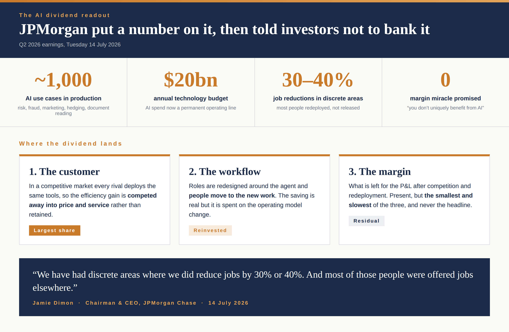

Where does the AI dividend go?
What's the latest?
On Tuesday's Q2 earnings call, Jamie Dimon put numbers on what AI is doing inside JPMorgan: close to a thousand use cases in production, and "discrete areas where we did reduce jobs by 30% or 40%", with most of those people redeployed rather than released.
Then he told investors not to bank it: "You don't uniquely benefit from AI. In a competitive, capitalist world, we all will use AI to do a better job for the customers."
Read those two statements together and you have the most honest account of enterprise AI economics any CEO has given this year. The work changes dramatically. The margin, mostly, does not.
Why does it matter?
Because it tells you the AI dividend has three destinations, and only one of them is the P&L. Part is competed away into price and service, because every rival deploys the same tools. Part is reinvested in the operating model change itself, the redesigned roles and the redeployed people. What is left for the margin is real but residual, and it is never the headline number in the business case.
So before the next AI initiative is approved on a savings line, ask:
- Which share of the modelled saving survives competition, honestly?
- Where do the displaced hours go, and is the redeployment costed?
- Who owns the workflow after the change, and who signs for the residual?
- If the margin case is thin, is the real case customer value, and does the board know that is what it is buying?

The AI dividend readout from JPMorgan's Q2. The saving is real; where it lands is the strategy question.
My reframe question
Before you approve an AI business case on a savings line, can you show how much of that saving reaches the P&L after competition takes its share and the redeployment is paid for, and who signed for that number?
Every AI business case I see still ends the same way: a savings line that lands neatly in next year's P&L. This week the biggest bank in the world, with a thousand use cases in production, said the quiet part out loud: the efficiency is real, and the margin gain mostly is not, because your competitors have the same tools.
That is not a reason to slow down. It is a reason to know where your dividend goes before you promise it to the board!